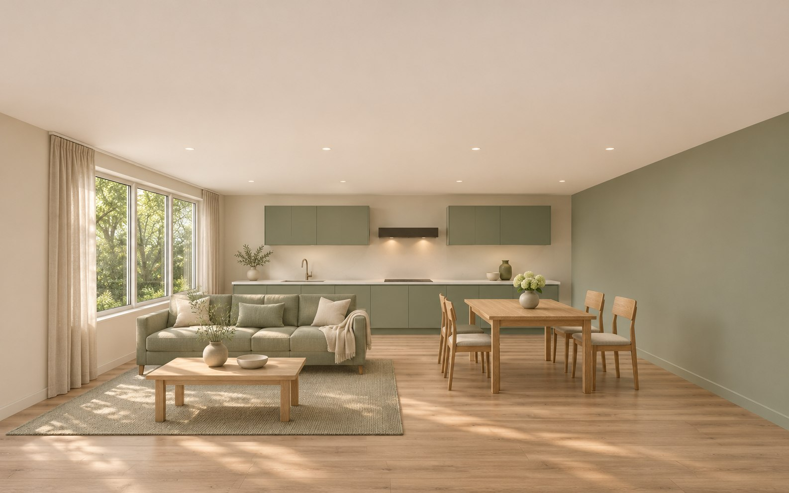
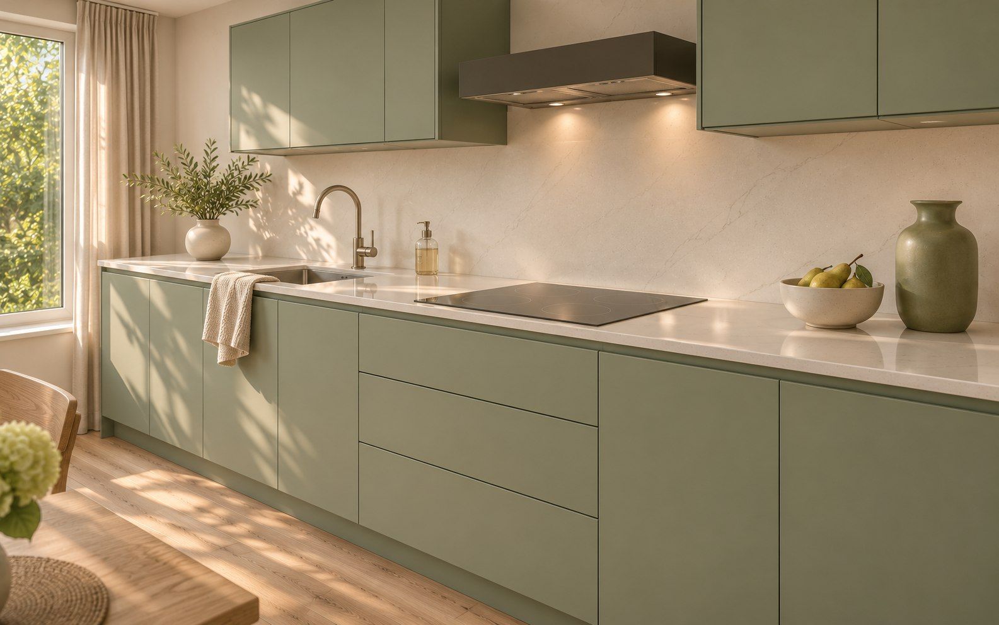
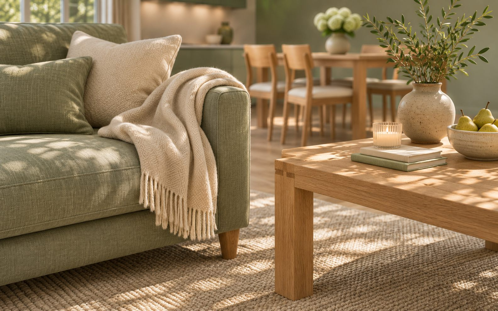

Встретиться на кухне
Одежда у выхода, завтрак у окна. Дверь в спальни закрывает шум ранних сборов.

Кухня и гостиная соединены маршрутом. Две спальни остаются в тихой части, а повседневные вещи хранятся по пути.
Пройти один день домаВизуализации сгенерированы ИИ для концепта; это не фотографии реализованного объекта.


Не парадным приёмом гостей. Тем, как собираются утром, возвращаются домой и расходятся спать.
Одежда у выхода, завтрак у окна. Дверь в спальни закрывает шум ранних сборов.
За общим столом можно делать уроки и работать. Диван не перекрывает проход между комнатами.
Мягкий свет по маршруту к санузлу. У каждого спального места свой выключатель.
Сценарии условные и уточняются под привычки семьи.
Без прохода через гостиную к спальням. Хранение занимает внутренний периметр, оставляя окна для жизни.
Пример — концепт для портфолио. Условная площадь 82 м². Мокрые зоны и перегородки требуют проверки по исходному плану.
Книги открыты, бытовые вещи закрыты. Низкий мебельный пояс продолжается под окном и оставляет стену лёгкой.
Ровная матовая стена, пригодная для локального обновления.
Общая фактура столов, полок и дверных ручек.
Съёмные чехлы, плотная штора и мягкий акустический фон.
Сесть, снять обувь, повесить сумку. Открытые крючки рядом с закрытым шкафом.
Неглубокий ящик для зарядок и бумаг. Рабочее место можно быстро освободить.
Локальная полка, розетка и свет. Не нужно вставать, чтобы погасить комнату.
Пример — концепт для портфолио. Смета на 82 м², без ремонта, мебели и инженерных расчётов.
| Раздел | ₽/м² | Стоимость |
|---|---|---|
| Планировка | 700 | 57 400 ₽ |
| Концепция и материалы | 900 | 73 800 ₽ |
| Чертежи | 1 400 | 114 800 ₽ |
| Спецификации | 500 | 41 000 ₽ |
| Итого | 3 500 | 287 000 ₽ |
Визуализация — от 30 000 ₽, отдельно.